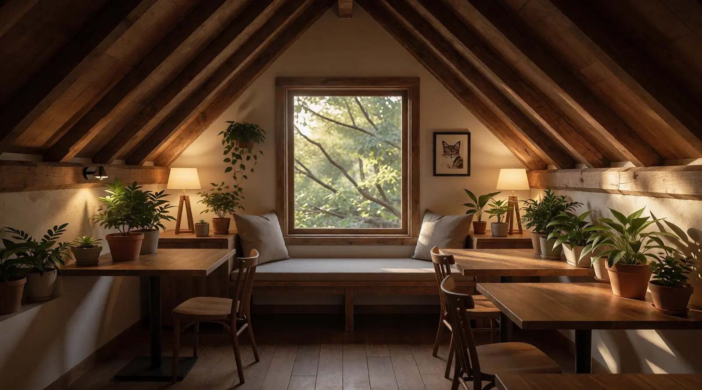

Phòng
Phòng đơn
Mô tả phòng đang cập nhật.
Giá: liên hệ

Cà phê · Lưu trú · Phố cũ
Cà phê rang mộc, bánh nhà làm, nhạc nhỏ và nhiều cây xanh.
Chỉ đường tới quán Ở lại Gác NhỏỞ lại Gác Nhỏ để thức dậy giữa phố cũ, xuống gác là có cà phê.
Phòng
Mô tả phòng đang cập nhật.
Giá: liên hệ
Phòng
Mô tả phòng đang cập nhật.
Giá: liên hệ
Đặt phòng: gọi 0900 000 000 để hỏi phòng trống và giá.
Địa chỉ: Tầng 2, 25 Hàng Bạc, Hoàn Kiếm, Hà Nội
Mở cửa: 7:00 – 22:30, cả tuần
Gọi trước: 0900 000 000
Quán ở trên gác, cầu thang hơi dốc. Gửi xe ở đầu ngõ, quán trả phí gửi xe cho bạn.